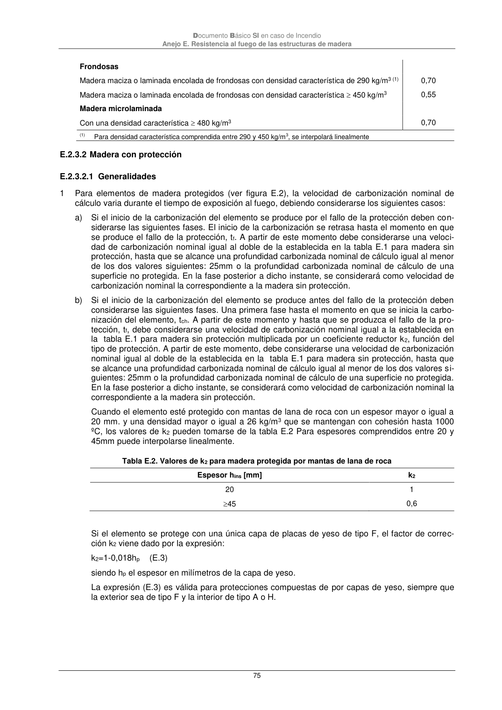

DB-SI Seguridad en caso de incendio · edición 2025-03-04 · capa oficial
Documento DB-SI-oficial · SHA-256 del PDF 0a2e78cd62471d9cc5cfe2efbc6aa39fdbad73c124aea7b039f9de96c141e105
Página física 75 de 92.
Copia fiel del PDF fuente · Fuente oficial
Ficha de la disposición en la fuente oficial
Formato: Texto de la página (Markdown)
Documento Básico SI en caso de Incendio Anejo E. Resistencia al fuego de las estructuras de madera 75 Frondosas Madera maciza o laminada encolada de frondosas con densidad característica de 290 kg/m3 (1) 0,70 Madera maciza o laminada encolada de frondosas con densidad característica 450 kg/m3 0,55 Madera microlaminada Con una densidad característica 480 kg/m3 0,70 (1) Para densidad característica comprendida entre 290 y 450 kg/m3, se interpolará linealmente E.2.3.2 Madera con protección E.2.3.2.1 Generalidades 1 Para elementos de madera protegidos (ver figura E.2), la velocidad de carbonización nominal de cálculo varia durante el tiempo de exposición al fuego, debiendo considerarse los siguientes casos: a) Si el inicio de la carbonización del elemento se produce por el fallo de la protección deben con- siderarse las siguientes fases. El inicio de la carbonización se retrasa hasta el momento en que se produce el fallo de la protección, tf. A partir de este momento debe considerarse una veloci- dad de carbonización nominal igual al doble de la establecida en la tabla E.1 para madera sin protección, hasta que se alcance una profundidad carbonizada nominal de cálculo igual al menor de los dos valores siguientes: 25mm o la profundidad carbonizada nominal de cálculo de una superficie no protegida. En la fase posterior a dicho instante, se considerará como velocidad de carbonización nominal la correspondiente a la madera sin protección. b) Si el inicio de la carbonización del elemento se produce antes del fallo de la protección deben considerarse las siguientes fases. Una primera fase hasta el momento en que se inicia la carbo- nización del elemento, tch. A partir de este momento y hasta que se produzca el fallo de la pro- tección, tf, debe considerarse una velocidad de carbonización nominal igual a la establecida en la tabla E.1 para madera sin protección multiplicada por un coeficiente reductor k2, función del tipo de protección. A partir de este momento, debe considerarse una velocidad de carbonización nominal igual al doble de la establecida en la tabla E.1 para madera sin protección, hasta que se alcance una profundidad carbonizada nominal de cálculo igual al menor de los dos valores si- guientes: 25mm o la profundidad carbonizada nominal de cálculo de una superficie no protegida. En la fase posterior a dicho instante, se considerará como velocidad de carbonización nominal la correspondiente a la madera sin protección. Cuando el elemento esté protegido con mantas de lana de roca con un espesor mayor o igual a 20 mm. y una densidad mayor o igual a 26 kg/m3 que se mantengan con cohesión hasta 1000 ºC, los valores de k2 pueden tomarse de la tabla E.2 Para espesores comprendidos entre 20 y 45mm puede interpolarse linealmente. Tabla E.2. Valores de k2 para madera protegida por mantas de lana de roca Espesor hins [mm] k2 20 1 45 0,6 Si el elemento se protege con una única capa de placas de yeso de tipo F, el factor de correc- ción k2 viene dado por la expresión: k2=1-0,018hp (E.3) siendo hp el espesor en milímetros de la capa de yeso. La expresión (E.3) es válida para protecciones compuestas de por capas de yeso, siempre que la exterior sea de tipo F y la interior de tipo A o H.

Datos candidatos: compruebe celdas y notas en el PDF.